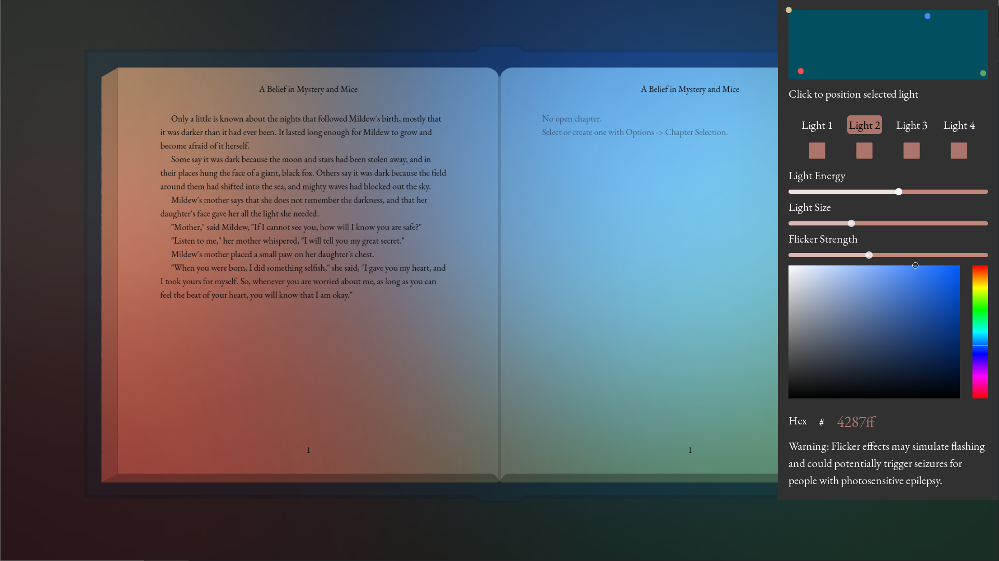
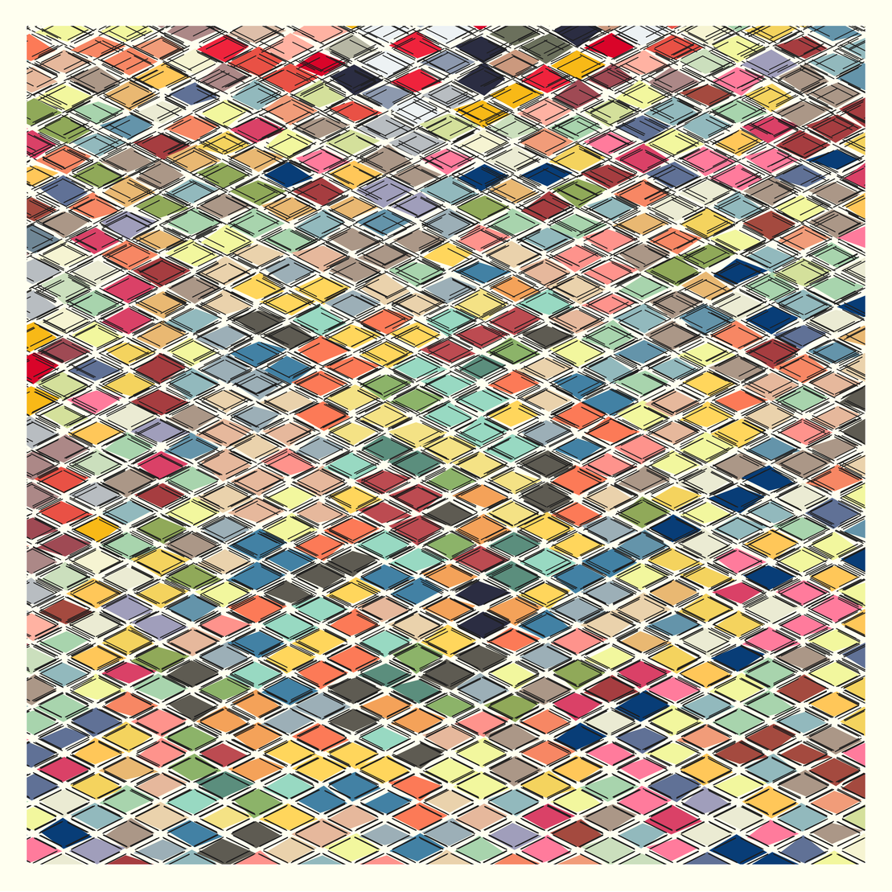

Hi, I'm Eric and these days I'm...
I have a firm belief that each person has a list of certain things only they can create, ideas that are entirely
unique to them and transient if ignored.
Whether it is something as simple as a weekend inremental game coding project, or
something as involved as a
350 page fantasy novel, I have dedicated myself to the exhausting, never-ending, wonderful journey of identifing
the things I am meant to create.
I'll put some highlights below, but look for much more in the relevant
sections in the sidebar.
I love making things and do that in a lot of different areas.
Qyllscape
A minimalist writing editor, created in the Godot engine.
Game Development / YouTube
I'm
building an audience
as I work on my game Population Undefined. I love solving problems and
even more I love teaching others what I learned along the way.
Check out
one of my favorite videos here.
Mobile App Development
Some of the apps I've made have been games, but not all of them. I
made a
crocheting stitch counter
that has gained quite a following, and recently I created a
minimalist meditation
app
that I'm hoping to build an audience for.
Generative Art
I create
generative art
with Python and JavaScript. If you're on desktop, you can see an
example to the right!
Other Random Stuff
A few other things I love talking about...
I've accumulated quite a collection of "weekend projects" over the years, while a few of
them have gone on to claim months or even years of my life.
QyllscapeA minimalist writing
editor
Example/demo Website: www.qyllscape.com
I primarily wanted a writing editor with responsive customization, so that I could somewhat view my writing as it would look in a book.
Over time, I added additional features such as lighting, which became one of my favorites.

Games
This is your Games content.
Writing
This is your Writing content.
Generative Art
This is your Generative Art content.
QyllscapeA minimalist writing
editor
Example/demo Website: www.qyllscape.com
I primarily wanted a writing editor with responsive customization, so that I could somewhat view my writing as it would look in a book.
Over time, I added additional features such as lighting, which became one of my favorites.
